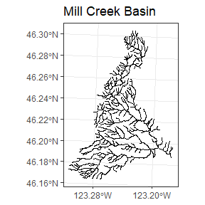
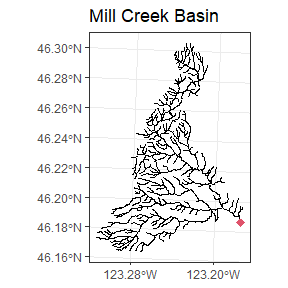
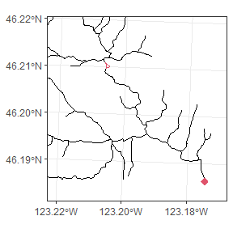
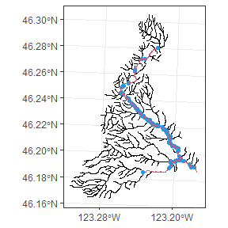

Preparing a Stream Network
shape_prep.Rmd
library(StreamVAST)
library(sf)
#> Linking to GEOS 3.9.1, GDAL 3.4.3, PROJ 7.2.1; sf_use_s2() is TRUE
library(ggplot2)
library(sfnetworks)StreamVAST
StreamVAST is an R package designed to help users format data from freshwater stream networks and interface with the VAST package to produce spatio-temporal models of animal densities. This package contains a variety of useful functions for quickly processing complex stream networks into a usable form, and attaching a variety of data to this network. It makes extensive use of the sfnetworks package, and users are advised to familiarize themselves with the basics of sfnetworks, particularly regarding activation and extraction of data. This chapter covers the steps necessary to prepare stream shapes and associated data. A second chapter will demonstrate how this data can then be used to create spatio-temporal models using VAST.
Example: Steelhead Salmon Redds in Mill Creek
Mill Creek is a small watershed located east of Longview, Washington that is home to an annual winter steelhead run from February to June. The population is assessed via counting the number of “redds” or nests observed during regular surveys during this spawning season. Redds are recorded using GPS devices and are tracked during successive surveys to determine if a particular is new or has been observed previously.

Converting your shape into a network
This shape was generated using ARCGIS and is derived from USGS surveys. However, it is not formatted as a network. The linestrings in the shapefile generally carry over through nodes or intersections in the stream, which will confound distance or path calculations. A good first step is to convert it to a sfnetwork. A helper function in the package makes this easy and ensures the transfer of any data fields. Note that some data fields may no longer be valid (i.e. values for a long segment will be inherited by new smaller segments), but it usually works well for identifiers.
Mill.net<-Makesfnetwork(Mill.basin0)The stream network functionality in VAST requires that all streams be part of a continuous network with a single root and no loops or multi-thread channels. This results in a network where every section (except the root) has a single parent and a single distance to its parent. If the shape is structured with a single root, then a simple function will find it and return it as a sf POINT object.
Mill.root<-LocateRoot(Mill.net)
Because the identifying the root node is a crucial step, several
functions exist that may help:
-FindRoots: returns all nodes intersecting a segment
-LocateFeature: Allows the user to select a node using the command line
and graphics window
-RootNetwork: Ensures all segments are ordered correctly (away from the
root) and removes unconnected features
Last, we will remove any multi-channel sections from the network. In our case, there is one. The FixLoops function can help with this by guiding the user through a series of command line prompts. For the vignette, we will jump past this process. It is also sometimes convenient to leave this step until later, as the next section “Simplifying a network or shape” may also fix these problems.

#> # A sfnetwork with 388 nodes and 387 edges
#> #
#> # CRS: NAD83 / Washington South (ftUS)
#> #
#> # A rooted tree with spatially explicit edges
#> #
#> # Node Data: 388 × 1 (active)
#> # Geometry type: POINT
#> # Dimension: XY
#> # Bounding box: xmin: 927926.1 ymin: 315473.9 xmax: 963621.4 ymax: 366441.2
#> # … with 388 more rows, and 1 variable: geometry <GEOMETRY [US_survey_foot]>
#> #
#> # Edge Data: 387 × 20
#> # Geometry type: LINESTRING
#> # Dimension: XY
#> # Bounding box: xmin: 927926.1 ymin: 315473.9 xmax: 963621.4 ymax: 366441.2
#> from to LLID LLIDSRC LENGTH STRM_N… FEATURE SCALED REV_DA… Correc…
#> <int> <int> <chr> <chr> <dbl> <chr> <chr> <dbl> <chr> <dbl>
#> 1 1 2 1232… 24K 2222. NA WC 0 06-12-… 0
#> 2 3 4 1232… 24K 2017. NA WC 0 06-12-… 0
#> 3 5 6 1232… 24K 1440. NA WC 0 06-12-… 0
#> # … with 384 more rows, and 10 more variables: RMflagMich <dbl>,
#> # RMFlag_FD <dbl>, TopHatch <dbl>, BanksMeas <dbl>, BanksMouth <dbl>,
#> # CrctMethod <chr>, LengthFlag <dbl>, Shape_Leng <dbl>, geometry <LINESTRING
#> # [US_survey_foot]>, loop <lgl>The final result should be identified by sfnetworks as “a root tree with spatially explicit edges” and we have now satisfied the assumptions necessary for VAST.
Simplifing a network or shape
The basin contains many branches that are too small for steelhead to spawn or inhabit, so a common first step is to simplify the shape. There are a number of options, but we will use the redd data to extract only the parts of the network where redds have been observed. Other options include using line work, or identifiers in the network object to match or exclude sections.
Mill.basin2<-PruneNetwork(network = Mill.basin, root = Mill.root,match = Mill.redds.sf,plot=F)
The above figure shows the original network in black, the locations of redd observations in blue, and the new stream network in red. The new network reflects all areas that are necessary to connect the observations to the root. This process often leaves some unnecessary nodes in place, and in general it is best to remove them at this stage, unless you wish those nodes preserved in future steps.
Mill.basin3<-SimplifyNetwork(network = Mill.basin2,makeplot = F)We should now have a clean set of shapes for our stream network
Defining spatial frame
The next step is to define the spatial resolution for the stream network. With this dataset, the observation are discreet gps coordinates, and they must be aggregated into defined reaches for the VAST model. Future options will allow users to define the spatial resolution in more complex ways, but for now we will assign prediction frames by selecting a target size. We will use a target of 1 km or 3280 feet, though the algorithm will adjust this value to make evenly sized and spaced stream reaches, while respecting the nodes of the network.
Mill.reaches<-AssignReaches(network = Mill.basin3,targetsize = 3280)
#> [1] "Using reach size of 3345.6"The process of pruning and assigning reaches typically removes the data attached to the network, so we can reattach it using a simple function. In this case, we will only attach one field. Because the new reaches are unlikely to match the old ones, numeric values for a reach are based on a weighted average of the areas that a reach overlaps, whereas character or factor values are concatenated to make a new value.
Mill.reaches2<-AttachData(shape = st_as_sf(activate(Mill.reaches,"edges")),refshape = Mill.basin0,fields = "STRM_NAME")We will also run a quick function to check the network has a valid structure and also compute some useful values, such as marking the reachid of the parent, and the distance between segments (measured at the midpoints)
Mill.reaches3<-CheckNetwork(network=as_sfnetwork(Mill.reaches2),root=Mill.root)Assemble the Data
Now that we have a fully processed and valid network, and have
assigned our reaches, it is time to assemble it into a data frame. For
this example, data are collected if surveys that cover a segment of the
stream and can be defined as a start and end point. These points are
used to determine which reaches were observed on each date, and the
extent of the reach that was observed is recorded as “effort”, which
will become the offset in the VAST model. Counts can be computed at the
survey level, or as distinct observations (redds). Surveys should be
formatted as an sf object with a LINESTRING for each survey or transect,
and this LINESTRING should be reasonably close to the linework used in
the network. This package includes two functions that can help construct
necessary survey object:
-MakeSurveyTracks: Uses start and stop coordinates to trace a path along
the network
-RiverMeasureLL: Converts river measures to Lat/Lon, or vice versa
If there are numerous surveys, this function can be time consuming Future versions will have expanded capabilities to also handle data collected at discreet points, such as dams or weirs.
The final step is to combine the spatial reaches, our surveys, and any other data. This last function will use the survey tracks to determine the amount of effort applied to each reach on a given date, which will become the offset for the VAST model. Separately, it will also match observations to each survey, and this allows the observed counts and density for each reach on each date to be calculated and used in the model. In this example, each observation has its own coordinates, but a total count for the survey can also be used (in which case, the function assumes observations are evenly spaced, equivalent to constant density over the surveyed area. Note that with large datasets, this step may take several hours.
Mill.data<-AssembleReddData(shape = Mill.reaches3,georedds = Mill.redds,georedds.coords = c("lon","lat"),reddcrs = 2286,surveys = Mill.surveys)
head(Mill.data)
#> Year Day Reach Effort Redds habitat STRM_NAME root
#> 1 2013 64 1 2465.601 [US_survey_foot] 0 TRUE Mill Creek TRUE
#> 2 2013 64 2 3499.699 [US_survey_foot] 0 TRUE Mill Creek FALSE
#> 3 2013 64 3 3354.350 [US_survey_foot] 0 TRUE Mill Creek FALSE
#> 4 2013 64 4 3354.350 [US_survey_foot] 0 TRUE Mill Creek FALSE
#> 5 2013 78 1 2465.601 [US_survey_foot] 0 TRUE Mill Creek TRUE
#> 6 2013 78 2 3499.699 [US_survey_foot] 0 TRUE Mill Creek FALSE
#> parent parent.distance
#> 1 NA NA
#> 2 1 3499.699
#> 3 2 3427.024
#> 4 3 3354.350
#> 5 NA NA
#> 6 1 3499.699In the next chapter, We will explore some additional options for formatting the data for use in VAST, and how to ensure that the necessary accessory objects and dataframes are ready for VAST package functions.